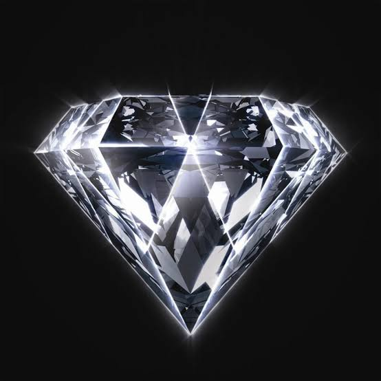
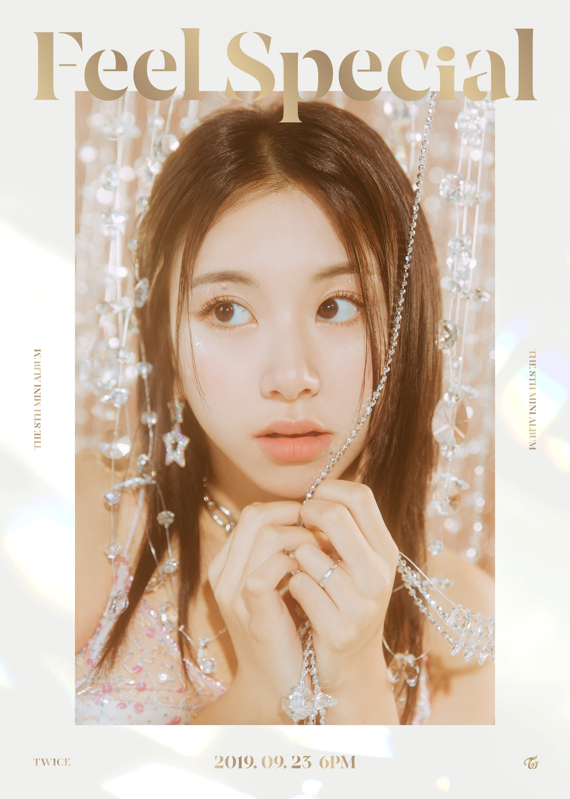

TWICE is a girl group consisting of 9 members: Jihyo, Nayeon, Jeongyeon, Momo, Sana, Mina, Dahyun, Chaeyoung, and Tzuyu.
The band debuted on October 20, 2015, through the survival show Sixteen, under JYP Entertainment.
As of February 2020, JYPE is partnering with Republic Records to help promote TWICE worldwide.
TWICE Fandom Name: Once
TWICE Official Fan Colors: Apricot & Neon Magenta
TWICE Official Accounts:
Official Website: twice.jype.com
Official Website (Japan): twicejapan.com
Twitter: @JYPETWICE
Twitter (Japan): @JYPETWICE_JAPAN
Instagram: @twicetagram
Instagram (Japan): @jypetwice_japan
Facebook: JYPETWICE
Youtube: Twice
Youtube (Japan): TWICE JAPAN OFFICIAL
Fan Cafe: TWICE9
V Live: TWICE
TikTok: @twice_tiktok_official
TikTok (Japan): @twice_tiktok_officialjp
TWICE Members Profile:
Stage Name: Nayeon
Birth Name: Im Na-yeon
Birthday: September 22, 1995
Birthplace: Seoul, South Korea
Height: 163cm
Weight: 47kg
Zodiac sign: Virgo
Blood Type: A
Position: Lead Vocalist, Lead Dancer, Center
Stage Name: Jeongyeon
Birth Name: Yoo Kyung-wan
Birthday: November 1, 1996
Birthplace: Suwon, South Korea
Height: 168cm
Weight: 49kg
Zodiac sign: Scorpio
Blood Type: O
Position: Lead Vocalist
Stage Name: Momo
Birth Name: Hirai Momo
Birthday: November 9, 1996
Birthplace: Kyoto, Japan
Height: 163cm
Weight: 48kg
Zodiac sign: Scorpio
Blood Type: A
Position: Main Dancer, Vocalist, Rapper
Stage Name: Sana
Birth Name: Minatozaki Sana
Birthday: December 29, 1996
Birthplace: Osaka, Japan
Height: 168cm
Weight: 47kg
Zodiac sign: Capricorn
Blood Type: B
Position: Lead Dancer, Vocalist
Stage Name: Jihyo
Birth Name: Park Ji-hyo
Birthday: February 1, 1997
Birthplace: Guri, South Korea
Height: 160cm
Weight: 49kg
Zodiac sign: Aquarius
Blood Type: O
Position: Leader, Main Vocalist
Stage Name: Mina
Birth Name: Myoui Mina
Birthday: March 24, 1997
Birthplace: San Antonio, Texas, United States/h3>
Height: 163cm
Weight: 46kg
Zodiac sign: Aries
Blood Type: A
Position: Main Dancer, Sub Vocalist

Stage Name: Dahyun
Birth Name: Kim Da Hyun
Birthday: May 28, 1998
Birthplace: Seongnam, Gyeonggi-do, South Korea
Height: 158.6cm
Weight: 48.9kg
Zodiac sign: Gemini
Blood Type: O
Position: Lead Rapper, Sub Vocalist

Stage Name: Chaeyoung
Birth Name: Son Chae Young
Birthday: April 23, 1999
Birthplace: Seoul, South Korea
Height: 158.9cm
Weight: 46kg
Zodiac sign: Taurus
Blood Type: B
Position: Main Rapper, Sub Vocalist
Stage Name: Tzuyu
Birth Name: Chou Tzuyu
Birthday: June 14, 1999
Birthplace: Tainan, Taiwan
Height: 170cm
Weight: 48kg
Zodiac sign: Gemini
Blood Type: A
Position: Lead Dancer, Sub Vocalist, Visual, Maknae